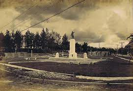

Tarlac takes on the cultures of Pangasinenses from its north, Ilocanos of Nueva Ecija on its east, Tagalogs of Zambales from its west and finally, Kapampangans from the south. There is much folklore on the origin of its name. The most recognized is its derivation from the Aeta world “Malatarlak” which refers to the wild cogon grass that greeted the Aetas when they first stepped into the land which is now Tarlac. Aetas were the earliest occupants of Luzon and moved throughout as nomads in search for food.
The land of Tarlac was formed when volcanic eruptions created the Zambales Range. This range was once an island separated from the rest of what is now Luzon by a strait from the Lingayen Gulf to the Manila Bay. From the continual activity of the volcanoes, its sand rested on the Zambales Range over the strip of the sea. There emerged Tarlac Province, a wide, flat, reclaimed land area, part of the great central plains of Luzon. Some great valleys of land became water where passenger canoes floated during the flood seasons from Manila Bay to Lingayen Gulf.Although its plains have been formed millions of years ago, Tarlac is a relatively young province, being the last in Central Luzon to be organized under the Spanish government. Until 1874, Tarlac was a part of Pangasinan and Pampanga. Nevertheless, the province earned itself one of the eight rays of the sun on the Philippine flag which symbolizes the first provinces to revolt against Spain in 1896.

Tarlac is historic for its role in the fight for the country’s emancipation. The first President, Gen. Emilio Aguinaldo, proclaimed it as the seat of power of the first Philippine Republic in March 1899 when he fled the former capital, Malolos, Bulacan. But this only lasted a month as he was chased to Nueva Ecija by the Americans. On November 1899, Tarlac was captured by the American forces.
During World War II, Camp O’Donell in Capas became the terminal point of the Bataan Death March where Filipino and American soldiers surrendered to Japanese troops in 1942. It was not until early 1945 when military forces liberated Camp O’Donell and rescued the prisoners of war in Capas.